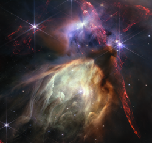
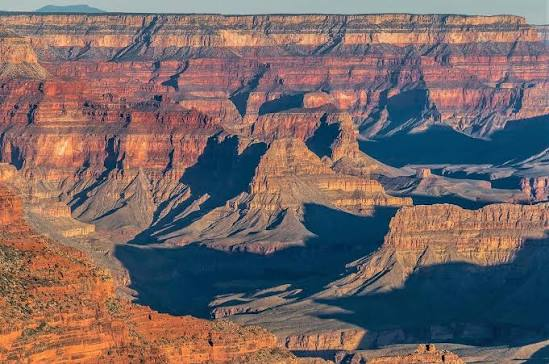
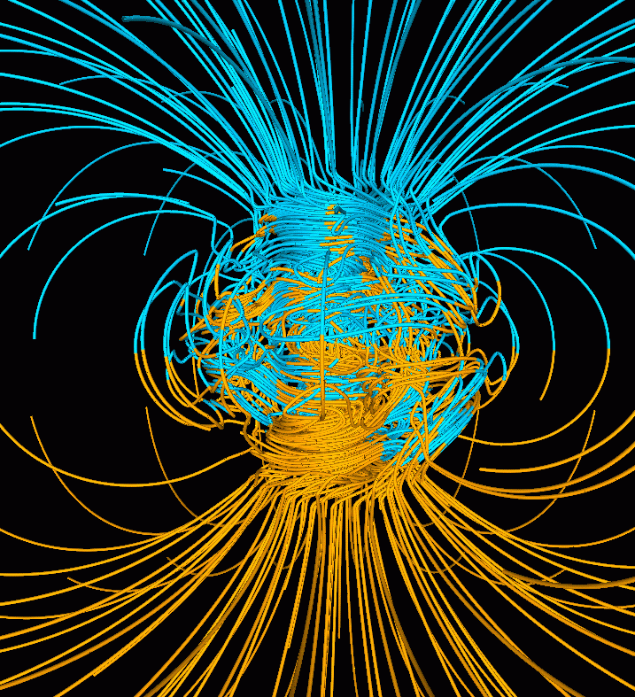
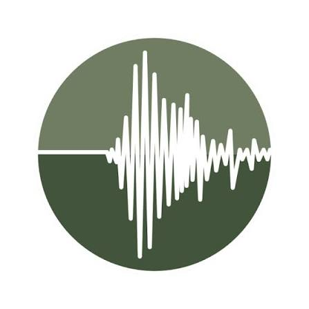
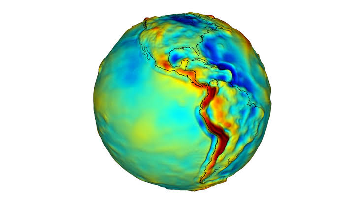

Astronomy
Notes on celestial motion, stars, galaxies, observational methods, planetary systems, and the physical principles used to understand the structure and evolution of the universe...

Geology
An introduction to minerals, rocks, stratigraphy, structural geology, plate tectonics, sedimentary processes, and the history recorded in Earth materials...

Geomagnetism and Geoelectricity
Notes on Earth magnetic and electric fields, electromagnetic induction, electrical conductivity, magnetotellurics, and signals generated by the solid Earth and near-space environment...

Seismology
A study of earthquakes, seismic waves, source mechanisms, Earth interior structure, wave propagation, and the methods used to infer subsurface properties from seismic records...

The Gravity and The Tide of Earth
Notes on Earth gravity, gravitational potential, tides, deformation, geodesy, and how mass distribution inside and outside Earth affects observed gravity and tidal signals...